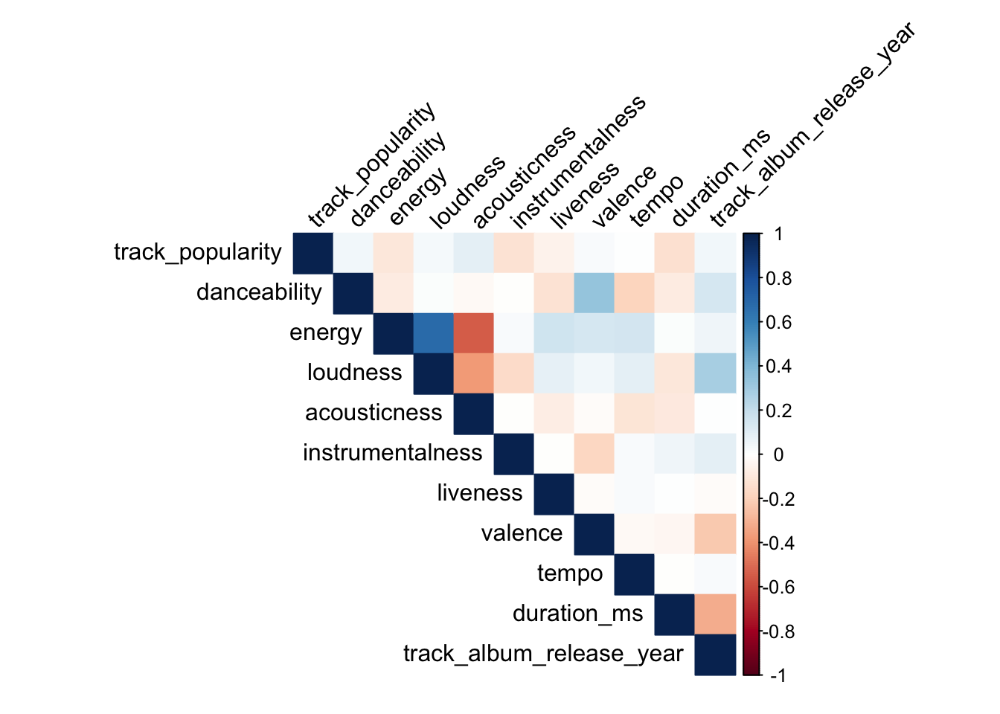
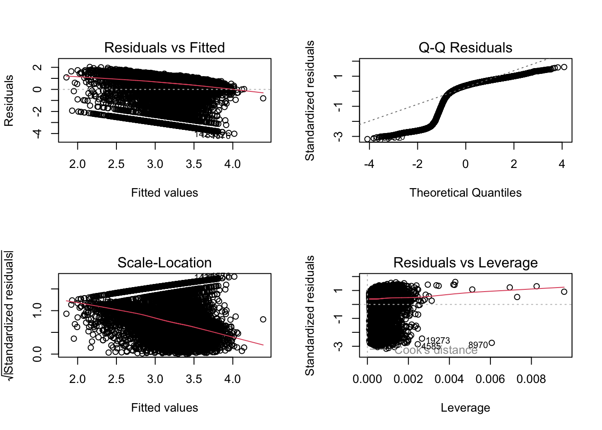
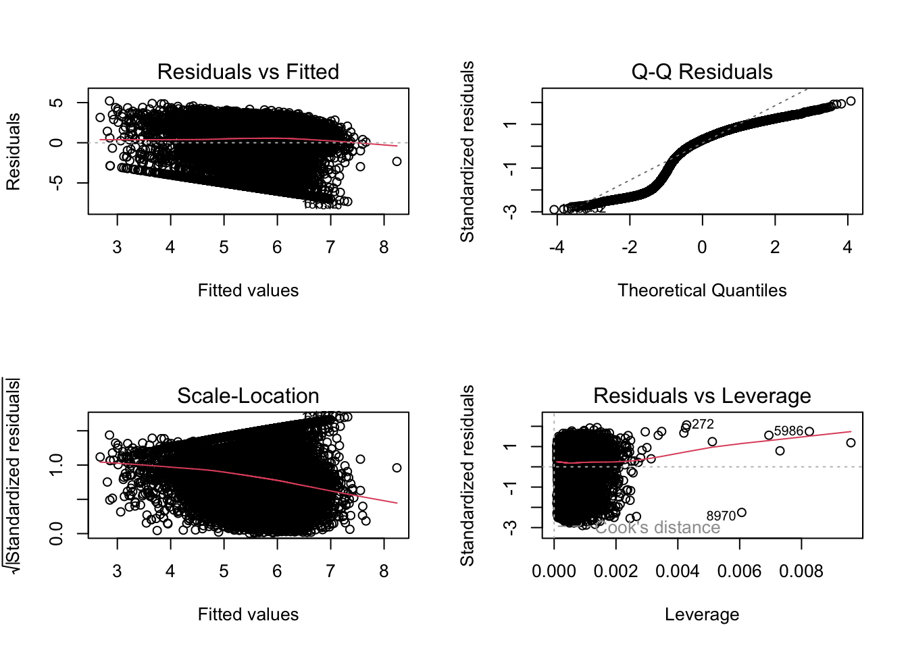
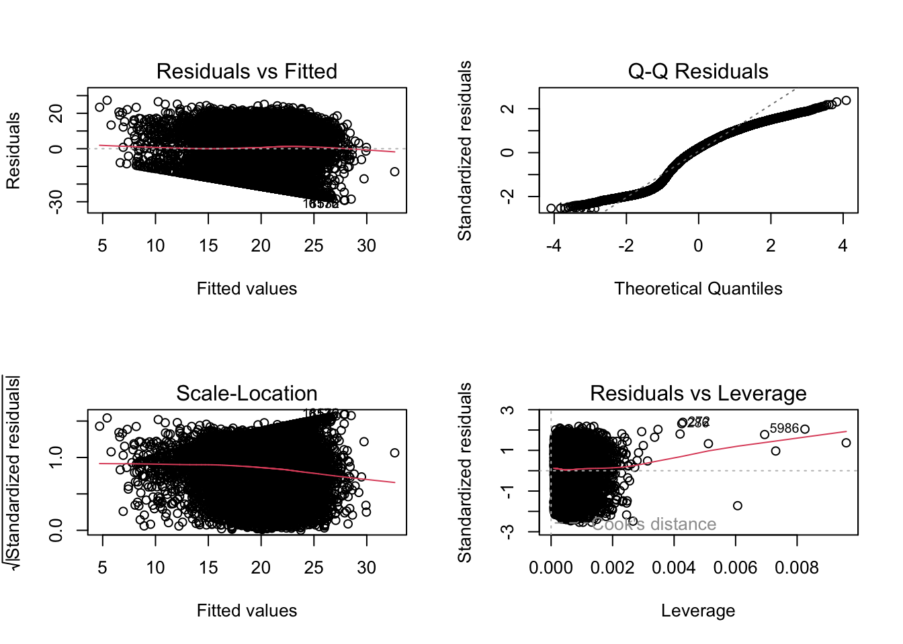

spotify_data <-
spotify_df %>%
distinct(track_id,.keep_all = T) %>%
dplyr::select(-track_id,-track_album_id,-playlist_id) %>%
mutate(track_album_release_year = as.numeric(str_sub(track_album_release_date,1,4))) %>%
dplyr::select(-track_album_release_date) %>%
mutate(playlist_name = factor(playlist_name),
playlist_genre = factor(playlist_genre),
playlist_subgenre = factor(playlist_subgenre)) %>%
mutate(danceability = danceability * 100,
energy = energy * 100) %>%
mutate(key = factor(case_match(key,0 ~ "C",
1 ~ "C#/Db", 2 ~ "D",
3 ~ "D#/Eb", 4 ~ "E",
5 ~ "F", 6 ~ "F#/Gb",
7 ~ "G", 8 ~ "G#/Ab",
9 ~ "A", 10 ~ "A#/Bb",
11 ~ "B")),
mode = factor(case_match(mode, 0 ~ "minor",
1 ~ "Major")),
speechiness = factor(case_when(speechiness < 0.33 ~ "non-speech-like music",
speechiness >= 0.33 & speechiness <= 0.66 ~ "mix of speech and music",
speechiness > 0.66 ~ "entirely of spoken words")))
spotify_enhanced =
spotify_data |> mutate(
song_age = 2024 - track_album_release_year
)
train_data <- sample_frac(spotify_enhanced, size = .8)
test_data <- anti_join(spotify_enhanced, train_data, by = "track_name")
train_data_no_0 <-train_data |> filter(track_popularity > 0)This analysis explores the relationship between the popularity of a song (outcome variable) and its attributes (predictors). The analysis is divided into two parts:
The following preprocessing steps were applied to the dataset:
track_id,
track_album_id, and playlist_id.track_album_release_date to
track_album_release_year.song_age as 2024 -
track_album_release_year.playlist_name,
playlist_genre, playlist_subgenre,
key, mode, and speechiness
(categorized based on value).danceability and energy by
100.# type of parameters
t(t(map(spotify_enhanced, class)))## [,1]
## track_name "character"
## track_artist "character"
## track_popularity "numeric"
## track_album_name "character"
## playlist_name "factor"
## playlist_genre "factor"
## playlist_subgenre "factor"
## danceability "numeric"
## energy "numeric"
## key "factor"
## loudness "numeric"
## mode "factor"
## speechiness "factor"
## acousticness "numeric"
## instrumentalness "numeric"
## liveness "numeric"
## valence "numeric"
## tempo "numeric"
## duration_ms "numeric"
## track_album_release_year "numeric"
## song_age "numeric"# Check the correlation between numeric parameters. help detect hidden patterns among variables
numeric_vars <- spotify_data %>%
dplyr::select(track_popularity, danceability, energy, loudness,
acousticness, instrumentalness, liveness, valence,
tempo, duration_ms, track_album_release_year)
correlation_matrix <- cor(numeric_vars)
corrplot(correlation_matrix, method = "color", type = "upper",
tl.col = "black", tl.srt = 45)
From the correlation plot of the numeric variables, we observed:
The correlation plot helps us identify hidden patterns among variables and guides the feature selection process.
# Music popularity often follows a "power law" distribution
# Few very popular songs, many less popular ones
spotify_data %>%
arrange(desc(track_popularity)) %>%
mutate(rank = row_number()) %>%
ggplot(aes(x = rank, y = track_popularity)) +
geom_line() +
labs(title = "Popularity Distribution")Then we try to do the distribution plot to detect the distribution of popularity. From the plot, we can see that the popularity of songs follows a “power law” distribution. This means that there are a few very popular songs and many less popular ones. This is a common distribution for popularity data, as it is often the case that a few songs become very popular while most songs remain relatively unknown.
p1 <- ggplot(train_data, aes(x = track_popularity)) +
geom_histogram(binwidth = 1, fill = "skyblue", color = "black") +
labs(title = "Original Distribution", x = "Track Popularity", y = "Count") +
theme_minimal()
p1The distribution of track popularity shows:
This distribution highlights the need for possible transformations to address the over representation at zero.
set.seed(123)
model_all_input <-
lm(track_popularity ~ danceability + energy + loudness + acousticness + instrumentalness + valence +
tempo + liveness + duration_ms + speechiness + song_age + playlist_genre + key + mode,
data = train_data)
summary(model_all_input) |>
broom::tidy() |>
knitr::kable(digits = 3)| term | estimate | std.error | statistic | p.value |
|---|---|---|---|---|
| (Intercept) | 50.250 | 5.176 | 9.709 | 0.000 |
| danceability | 0.094 | 0.013 | 7.224 | 0.000 |
| energy | -0.219 | 0.014 | -15.724 | 0.000 |
| loudness | 1.193 | 0.076 | 15.782 | 0.000 |
| acousticness | 3.955 | 0.831 | 4.758 | 0.000 |
| instrumentalness | -6.359 | 0.721 | -8.820 | 0.000 |
| valence | -1.223 | 0.779 | -1.570 | 0.116 |
| tempo | 0.028 | 0.006 | 4.829 | 0.000 |
| liveness | -2.579 | 0.990 | -2.605 | 0.009 |
| duration_ms | 0.000 | 0.000 | -15.453 | 0.000 |
| speechinessmix of speech and music | 5.120 | 4.786 | 1.070 | 0.285 |
| speechinessnon-speech-like music | 6.094 | 4.751 | 1.283 | 0.200 |
| song_age | -0.008 | 0.018 | -0.428 | 0.669 |
| playlist_genrelatin | 7.589 | 0.586 | 12.961 | 0.000 |
| playlist_genrepop | 12.237 | 0.547 | 22.371 | 0.000 |
| playlist_genrer&b | 2.535 | 0.613 | 4.134 | 0.000 |
| playlist_genrerap | 7.439 | 0.556 | 13.379 | 0.000 |
| playlist_genrerock | 11.093 | 0.659 | 16.836 | 0.000 |
| keyA#/Bb | 0.579 | 0.762 | 0.759 | 0.448 |
| keyB | 0.726 | 0.707 | 1.027 | 0.305 |
| keyC | 0.986 | 0.682 | 1.445 | 0.148 |
| keyC#/Db | 0.741 | 0.664 | 1.115 | 0.265 |
| keyD | -0.134 | 0.718 | -0.187 | 0.851 |
| keyD#/Eb | -0.371 | 1.035 | -0.358 | 0.720 |
| keyE | -0.230 | 0.762 | -0.302 | 0.763 |
| keyF | 1.299 | 0.725 | 1.793 | 0.073 |
| keyF#/Gb | 0.966 | 0.732 | 1.320 | 0.187 |
| keyG | -0.361 | 0.684 | -0.529 | 0.597 |
| keyG#/Ab | 1.758 | 0.749 | 2.348 | 0.019 |
| modeminor | -0.384 | 0.323 | -1.192 | 0.233 |
Above is the result of multiple linear regression, the model didn’t include the sub_genre as it is hard to define the sub-genre of a song and there might be some error. Also to avoid the complexity. For this part, the model would only use genre but not the sub-genre.
The regression results revealed several significant predictors:
Danceability: Positive and highly significant (\(\beta = 0.096\), p < 0.001). Each unit increase in danceability is associated with a 0.096 increase in popularity.
Energy: Negative and highly significant (\(\beta = -0.222\), p < 0.001), indicating that each unit increase in energy is associated with a 0.222 decrease in popularity.
Loudness: Positive and highly significant (\(\beta = 1.268\), p < 0.001), showing that louder tracks tend to be more popular.
Acousticness: Positive and highly significant (\(\beta = 4.503\), p < 0.001), demonstrating that more acoustic tracks tend to have higher popularity.
Instrumentalness: Negative and highly significant (\(\beta = -5.935\), p < 0.001), implying that instrumental tracks tend to be less popular.
Valence: Negative and significant (\(\beta = -1.793\), p = 0.021), showing that tracks with lower valence (less “happy”) tend to be more popular.
Tempo: Positive and highly significant (\(\beta = 0.028\), p < 0.001), suggesting faster tracks are slightly more popular.
Liveness: Negative and significant (\(\beta = -3.261\), p = 0.001), indicating that tracks with less “live” characteristics tend to be more popular.
Duration_ms: Negative and highly significant (\(\beta = 0.000\), p < 0.001), showing that shorter tracks tend to be more popular.
Playlist Genre (compared to EDM): All genres show significant positive effects:
Key (compared to Key A): Most keys don’t show significant differences, except:
Mode (compared to Major): The minor mode shows no significant difference (\(\beta = -0.421\), p = 0.190)
Notably, speechiness (both mix and non-speech-like) and song age showed no significant effects on popularity (p > 0.05).
par(mfrow = c(2,2))
plot(model_all_input)1. Residuals vs Fitted Plot (top left): - From this plot, we observe: - A fairly random scatter around the horizontal line at y=0 - A slight fan shape, with residuals spreading out more at higher fitted values - This suggests some minor violation of the homoscedasticity assumption, meaning the variance of residuals isn’t completely constant
Overall Assessment:
The model generally meets the assumptions of linear regression, but with some minor violations: - The main concern is some heteroscedasticity in the residuals - The normality assumption is reasonably met - There are a few potentially influential observations that might warrant further investigation
Given the linear models are only capture the linear relationship between the predictors and the popularity, we also try to use the random forest to see if the non-linear relationship could be captured. Also, random forest model was employed to identify the most influential predictors of song popularity.
rf_model <- randomForest(
track_popularity ~ danceability + energy + loudness +
acousticness + instrumentalness + liveness +
valence + tempo + duration_ms + track_album_release_year +
playlist_genre,
data = train_data,
ntree = 100,
importance = TRUE
)
# 3. Check model performance
rf_predictions <- predict(rf_model, test_data)
rf_rmse <- sqrt(mean((test_data$track_popularity - rf_predictions)^2))
print(paste("Random Forest RMSE:", rf_rmse))
# 4. Variable Importance
varImpPlot(rf_model,
main = "Variable Importance Plot")
# Print importance scores
importance(rf_model)
# 5. Tune hyperparameters
ctrl <- trainControl(
method = "cv",
number = 3,
verboseIter = TRUE
)
tuning_grid <- expand.grid(
mtry = seq(2, 6, by = 2) # Number of variables to try at each split
)
rf_tuned <- train(
track_popularity ~ danceability + energy + loudness +
acousticness + instrumentalness + liveness +
valence + tempo + duration_ms + track_album_release_year +
playlist_genre,
data = train_data,
method = "rf",
tuneGrid = tuning_grid,
trControl = ctrl
)
print(rf_tuned$bestTune)
# 6. Final model with best parameters
final_rf <- randomForest(
track_popularity ~ danceability + energy + loudness +
acousticness + instrumentalness + liveness +
valence + tempo + duration_ms + track_album_release_year +
playlist_genre,
data = train_data,
ntree = 100,
mtry = rf_tuned$bestTune$mtry
)
# 7. Compare with original linear model
final_rf_predictions <- predict(final_rf, test_data)
rf_rmse <- sqrt(mean((test_data$track_popularity - final_rf_predictions)^2))
plot_data <- data.frame(
Actual = test_data$track_popularity,
Predicted = final_rf_predictions
)
ggplot(plot_data, aes(x = Actual, y = Predicted)) +
geom_point(alpha = 0.3) +
geom_abline(intercept = 0, slope = 1, color = "red", linetype = "dashed") +
labs(title = "Random Forest: Actual vs Predicted Values",
x = "Actual Popularity",
y = "Predicted Popularity") +
theme_minimal()
# 8. Feature importance visualization
importance_df <- data.frame(
Feature = rownames(importance(final_rf)),
Importance = importance(final_rf)[,1]
) %>%
arrange(desc(Importance))
ggplot(importance_df, aes(x = reorder(Feature, Importance), y = Importance)) +
geom_bar(stat = "identity") +
coord_flip() +
theme_minimal() +
labs(title = "Feature Importance in Random Forest Model",
x = "Features",
y = "Importance Score")The random forest model identified the following key features influencing song popularity:
To improve predictive power and address potential heteroscedasticity,
several methods were applied to transform the
track popularity variable. These included:
These transformations were evaluated to determine their effect on the predictive accuracy and the overall model performance.
# Log transformation
model_log <- lm(log1p(track_popularity) ~ danceability + energy + loudness +
acousticness + instrumentalness + liveness +
valence + tempo + duration_ms + song_age,
data = train_data)
# Square root transformation
model_sqrt <- lm(sqrt(track_popularity) ~ danceability + energy + loudness +
acousticness + instrumentalness + liveness +
valence + tempo + duration_ms + song_age,
data = train_data)
shifted_popularity <- train_data$track_popularity + 1 # Add 1 to handle zeros
# Box-Cox transformation
bc <- boxcox(shifted_popularity ~ danceability + energy + loudness +
acousticness + instrumentalness + liveness +
valence + tempo + duration_ms + song_age,
data = train_data)# Find optimal lambda
lambda <- bc$x[which.max(bc$y)]
# Apply Box-Cox transformation
model_boxcox <- lm((track_popularity^lambda - 1)/lambda ~ danceability + energy +
loudness + acousticness + instrumentalness + liveness +
valence + tempo + duration_ms + song_age,
data = train_data)The Lambda is close to 1, which means the original model might be better. But we still need to check the distribution after transformation.
p1 <- ggplot(train_data, aes(x = track_popularity)) +
geom_histogram(binwidth = 1, fill = "skyblue", color = "black") +
labs(title = "Original Distribution", x = "Track Popularity", y = "Count") +
theme_minimal()
## popularity score could be 0
p2 <- ggplot(train_data, aes(x = log1p(track_popularity))) +
geom_histogram(binwidth = 0.1, fill = "lightgreen", color = "black") +
labs(title = "Log Transformation", x = "Log(Track Popularity + 1)", y = "Count") +
theme_minimal()
p3 <- ggplot(train_data, aes(x = sqrt(track_popularity))) +
geom_histogram(binwidth = 0.5, fill = "salmon", color = "black") +
labs(title = "Square Root Transformation", x = "Sqrt(Track Popularity)", y = "Count") +
theme_minimal()
p4 <- ggplot(train_data, aes(x = (track_popularity^lambda - 1)/lambda)) +
geom_histogram(binwidth = 1, fill = "purple", color = "black") +
labs(title = "Box-Cox Transformation", x = "Box-Cox Transformed Popularity", y = "Count") +
theme_minimal()
grid.arrange(p1, p2, p3, p4, ncol = 2)The distribution of the transformed popularity scores shows that they all looks normal besides the concentration of score of 0 in popularity.
check_residuals <- function(model) {
par(mfrow = c(2,2))
plot(model)
}
check_residuals(model_log)
check_residuals(model_sqrt)
check_residuals(model_boxcox) Other than the original model, the Box-Cox transformation model has the best distribution of residuals. Then we also compare the RMSE of the models to see which model is better. The log and square root transformation seems obey the linearity and normality assumption. Couldn’t tell which one is better in terms of prediction power, so then we compare the RMSE of the models.
compare_models <- function(models, test_data) {
results <- sapply(models, function(model) {
pred <- predict(model, newdata = test_data)
rmse <- sqrt(mean((test_data$track_popularity - pred)^2))
return(rmse)
})
return(results)
}
models_list =
list(
"all_parameter_model" = model_all_input,
"log" = model_log,
"sqrt" = model_sqrt,
"box" = model_boxcox
)
results <- compare_models(models_list, test_data)
results## all_parameter_model log sqrt box
## 21.78195 43.14219 41.03919 29.56895Actually, based on RMSE, the original as the lowest RMSE. So we would keep the original model.
spotify_data_filtered <- spotify_data %>% filter(track_popularity > 0)
spotify_data_matrix <- model.matrix(
track_popularity ~
danceability + energy + loudness + instrumentalness + valence + tempo + duration_ms +
track_album_release_year + playlist_genre + playlist_subgenre + key + mode, data = spotify_data_filtered)[, -1]
y <- spotify_data_filtered$track_popularity
set.seed(123)
train_indices <- sample(1:nrow(spotify_data_matrix), size = 0.7 * nrow(spotify_data_matrix))
train_x <- spotify_data_matrix[train_indices, ]
test_x <- spotify_data_matrix[-train_indices, ]
train_y <- y[train_indices]
test_y <- y[-train_indices]
# Apply Lasso regression (alpha = 1)
lasso_model <- cv.glmnet(train_x, train_y, alpha = 1)
# Get best lambda
best_lambda_lasso <- lasso_model$lambda.min
print(paste("Best lambda for Lasso:", best_lambda_lasso))## [1] "Best lambda for Lasso: 0.0449121893403259"# Predict on test set using Lasso model
lasso_predictions <- predict(lasso_model, s = best_lambda_lasso, newx = test_x)
# Calculate RMSE for Lasso
lasso_rmse <- sqrt(mean((test_y - lasso_predictions)^2))
print(paste("Lasso RMSE:", lasso_rmse))## [1] "Lasso RMSE: 19.6148349477214"# Get coefficients at best lambda
lasso_coef <- coef(lasso_model, s = best_lambda_lasso)
lasso_coef_df <- data.frame(
feature = rownames(lasso_coef),
coefficient = as.vector(lasso_coef)
) %>%
arrange(desc(abs(coefficient)))
lasso_coef_df %>%
filter(coefficient == 0) ## feature coefficient
## 1 playlist_genrer&b 0
## 2 playlist_genrerap 0
## 3 playlist_genrerock 0
## 4 keyD 0
## 5 keyD#/Eb 0Interpretation: In Lasso regression, the best lambda is 0.004, the RMSE is 19.6, and the Beta of above 5 variables are eliminated.